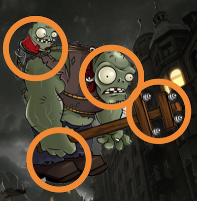

구현 기능

|
좀비가 떨어지는 기능 수 많은 좀비들이 위에서 밑으로 떨어집니다. |

|
좀비 제압 기능 터치로 떨어지는 좀비를 제압할 수 있습니다. 좀비가 맨 밑으로 도달하면 라이프가 소모됩니다. |
|  |
원 터치 기능 주어진 원들을 제한 시간 안에 터치해서 모두 없애야 합니다. 만약 없애지 못하면 라이프가 소모됩니다. |
사회에 기여하려고 한 점
창의적인 게임을 제작해서 출시하므로 게임을 하면서 색다른 재미를 느낄 수 있습니다.
창의적인 게임을 제작해서 출시하므로 게임을 하면서 색다른 재미를 느낄 수 있습니다.
배경과 목적
요즘 사람들은 스마트폰을 굉장히 많이 사용하므로 창의적인 스마트폰 게임을 만들어서 사람들한테 서비스를 제공하기 위해, 게임 개발자가 될 것에 대비하기 위해 저만의 게임을 제작하게 되었습니다.
요즘 사람들은 스마트폰을 굉장히 많이 사용하므로 창의적인 스마트폰 게임을 만들어서 사람들한테 서비스를 제공하기 위해, 게임 개발자가 될 것에 대비하기 위해 저만의 게임을 제작하게 되었습니다.
배운 점
- Android에서 View와 Canvas로 그래픽을 그리는 법을 알게 되었습니다.
- Android 앱을 구현하는 법을 알게 되었습니다.
진행 절차
- 게임을 만들기 전에 문제 해결 방안은 금방 떠올릴 수 있었고, 구현 방식은 View와 Canvas로 그래픽을 그리는 방식을 사용하였습니다.
- 클리커 게임은 처음 만들었기 때문에 생각보다 오랜 시간이 걸렸습니다. 게임을 만드는 과정 자체가 가장 어려웠을 정도였습니다. 그래서 터치했는데도 반응이 없고 좀비가 죽지 않는 등 오류가 많이 나왔습니다.
- 이러한 오류를 해결하기 위해, 소스 코드를 수정한 후 실행하는 작업을 연속적으로 하였습니다.
- 이렇게 해도 안 되면, 구글에서 에러 메시지로 검색해서 문제 해결 방안을 조사한 후 제 프로그램에 적용하였습니다.
- 그러나 한 오류를 해결하면 또 다른 오류가 떠서 구글에서 계속 검색한 끝에 해결한 적도 있었습니다.
- 이렇게 해서 원하는 프로그램을 구현할 수 있었습니다.
역량 강화를 위해 가장 노력한 점
Android Graphic에서 터치 앤 드래그, 충돌 판정을 이용한 창의적인 게임 제작
Android Graphic에서 터치 앤 드래그, 충돌 판정을 이용한 창의적인 게임 제작
전체 구조

사용 기술
Android, Java
Android, Java
개발 환경
Android Studio
Android Studio
부연 설명
- 2017년 쿡앱스 게임 개발 공모전에 출품하였고 현업 개발자분들께 피드백도 들었습니다.
- 소스 코드